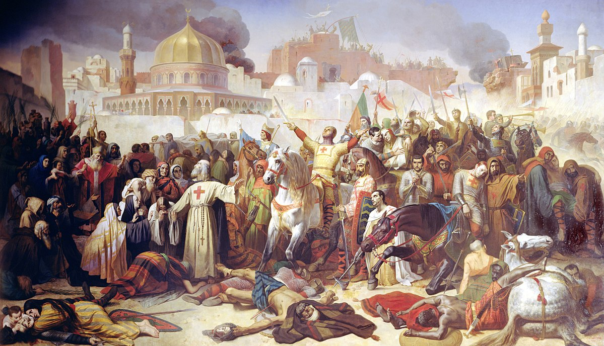

A painting depicting the Siege of Jerusalem during the First Crusade (Image Source)
Timeline of the Knights Templar
1099: Jerusalem is conquered in the First Crusade 1119: The Knights Templar is founded as the Poor Knights of the Temple of King Solomon 1127: The first varation of the rules by which members lived by is written 1129: The Order is endorsed by the Roman Catholic Church ata the Council of Troyes, as well as given the white mantle 1139: Pope Innocent II issues a Papal Bull stating that the Knights Templar should only owe allegiance to the Pope 1146: The Knights Templar adopts the "splayed red cross as their emblem" (Lords and Ladies) 1147: Start of the Second Crusade 1150: Start of the credit system 1153: Siege of Ascalon - Grand Master Bernard de Tremelay leads 40 Templars to battle and is not supported by the rest of their army, leading to them being sorrounded and beheaded 1184: "Army of Jerusalem and Guy of Lusigan, king of Jersalem defeated, all surviving Templars were executed" 1189: Sige of Acre, Grand Master Gérard de Ridefort is beheaded for breaking treaties 1191: Templars and Crusaders capture Acre 1229: Crusaders take back Jerusalem 1244: Khwarezmi Turks capture Jerusalem 1291: Siege of Acre - Results in the loss of Acre, Templars move to Cyprus 1302/3: Templars lose their island stronghold of Arwad, their last stronghold in the Holy Land 1307: Philip IV arrests Templars across France on Friday, October 13th 1307: Pope Clement orders the arrest of Templars across Europe on November 22nd 1310: "Philip IV orders TEmplars who have recanted their confessions to be burnt alive at the stake" 1312: Pope Clement signs over a majority of Templar assets to the Hospitallers at the Council of Vienne 1314: Grand Master Jacques de Molaya and Preceptor of Normandy Geoffrey de Charney are burnt alive at the stake on March 18th 1314: Both Pope Clement and King Philip die
This timeline was based off of these sources: The Knights Templar and "Knights Templar History"